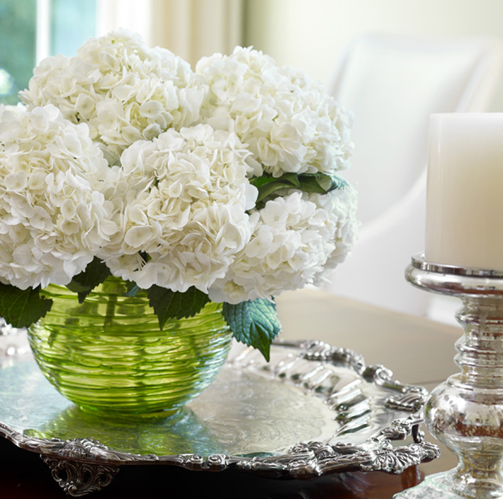

<!DOCTYPE html><html lang="en"><head>

    <meta charset="utf-8">
    <!--[if IE]><meta http-equiv="X-UA-Compatible" content="IE=edge"><![endif]-->
    <meta name="viewport" content="width=device-width, initial-scale=1.0, maximum-scale=1.0, user-scalable=0">
    <title>Words</title>
    <meta name="description" content="Jessica Bradley Interiors">
    <meta name="keywords" content="Jessica Bradley">

    <link rel="shortcut icon" href="assets/img/favicon.ico">
    <link rel="apple-touch-icon" href="assets/img/apple-touch-icon.jpg">
    <link rel="apple-touch-icon" sizes="72x72" href="assets/img/apple-touch-icon-72x72.jpg">
    <link rel="apple-touch-icon" sizes="114x114" href="assets/img/apple-touch-icon-114x114.jpg">

    <!-- <link href='http://fonts.googleapis.com/css?family=Cardo:400,400italic,700' rel='stylesheet' type='text/css'> -->

    <link rel="stylesheet" href="assets/css/bootstrap.min%EF%B9%96ver=1.0.css" type="text/css" media="all">
    <link rel="stylesheet" href="assets/css/font-awesome.min%EF%B9%96ver=1.0.css" type="text/css" media="all">
    <link rel="stylesheet" href="assets/css/flexslider%EF%B9%96ver=1.0.css" type="text/css" media="all">
    <link rel="stylesheet" href="assets/css/toastr.min%EF%B9%96ver=1.0.css" type="text/css" media="all">
    <link rel="stylesheet" href="assets/css/animate%EF%B9%96ver=1.0.css" type="text/css" media="all">
    <link rel="stylesheet" href="assets/css/style%EF%B9%96ver=1.0.css" type="text/css" media="all">

    <!--[if lt IE 9]>
        <script src="assets/js/html5.js"></script>
        <script src="assets/js/respond.min.js"></script>
    <![endif]-->

</head>

<body><div id="screen" style="position: fixed; color: red; font-size: 20px; padding: 10px; z-index: 9999"></div>


    <!-- Preloader -->
<!--     <div id="mask">
        <div id="loader"></div>
    </div> -->

    <header id="header">
        <nav class="navigation navigation-header">
          <div class="container-fluid">
            <div class="navigation-brand">
              <div class="brand-logo"><a href="works.html"><span class="sr-only">Jessica Bradley Interiors</span></a></div>
            </div>
            <div class="navigation-navbar">
              <ul class="navigation-bar">
                <li><a href="works.html"></a>
                    <ul>
                        <li><a href="works-living.html">Living</a></li>
                        <li><a href="works-dining.html">Dining</a></li>
                        <li><a href="works-kitchen.html">Kitchen</a></li>
                        <li><a href="works-bath.html">Bath</a></li>
                        <li><a href="works-bed.html">Bed</a></li>
                        <li><a href="works-mud-laundry.html">Mud and Laundry</a></li>
                        <li><a href="works-outdoor.html">Outdoor</a></li>
                        <li><a href="works-what-else.html">What Else?</a></li>
                        <li><a href="works-commercial.html">Commercial</a></li>
                    </ul>
                </li>
                <li><a href="words.html"></a></li>
                	<li><a href="re-jb.html"></a></li>
                    <li><a href="buzz.html"></a></li>
                	<li><a href="reach.html"></a></li>
              </ul>
            </div>
          </div>
        </nav>
    </header>

    <div id="words" class="main">
        <div class="container">
            <div class="heading"></div>
            <div class="row">
                <section class="words-left hidden-xs">
                    <article>
                        Jessica is so wonderful to work with! &nbsp;I love the way she truly honors your own style and then brings a modern and fresh twist&nbsp;to complement what you already have going on inside your home.
                        <div class="author">Jill Edwards<small>Brookhaven</small></div>
                    </article>
                    <article>Jessica was here to help me pick out our exterior colors and she did an awesome job with it. She had access to my Pinterest board ahead of time and she definitely did her homework picking colors that I liked. She was very reasonable and worked by the hour. She was also able to walk through the house and made a few other design suggestions. I will be hiring her services again to help me decorate my home!
                      <div class="author">riktha<br>
                      <smalli>As posted on houzz </smalli></div>
                    </article>
                    <article>
                        Jessica is laid-back, easy to work with, always quick to help with questions, and we've really enjoyed working with her on a recent renovation and decorating our new home. Jessica has an eye for taking the pieces in a room and putting them together to make a magnificent whole. She listened closely to what we&nbsp;preferred and provided style options that made our house a home. There were also times that Jessica encouraged us to think outside of how we would normally decorate, and each time we absolutely loved what she suggested. She is a trusted adviser and has made the job of decorating easier, more enjoyable, and much faster than on our own. We just wish we would have found her sooner!
                        <div class="author">Charity &amp; David Roe<small>Buckhead</small></div>
                    </article>
                    <article>
                        I interviewed a lot of decorators before choosing Jessica. She got the job – not just because of her obvious talent and experience – but because she's not at all pretentious. She was happy to start with a small project, and it grew from there. I trust her instincts and the nuances she brings, and always appreciate her down-to-earth approach in working together. Great staff, too!
                        <div class="author">Kelley Thomas<small>Tuxedo Park</small></div>
                    </article>
                </section>
                <section class="words-center">
              <p></p>
                    <article>
                          
                          <p>ny good interior designer knows how to make a house look great. But some recognize that it's not just what you see...it's what you feel. Definitely when the project completes, but also during the process, and partnership, in getting there. At Jessica Bradley Interiors, we work with clients to create fresh, inviting interiors around a very simple premise: Your home is your haven from today's non-stop outside world. A place that comforts the moment you step in. Where elegant always feels at home with everyday and<articlei>how you live</articlei>becomes the most important accent of all. Our pallets stay intentionally soft and soothing, living contently beside bold bursts of color; antique paired with modern; unexpected scales and textures; pretty yet practical furnishings; all centered on a can't-really-put-my-finger-on-it uniqueness which combine to deliver<articlei>just right.<br>
                          </articlei>And smartly stays that way for years. 
                          <br>
                          <br></p>
                    </article>
                </section>
                <section class="words-left-copy words-left visible-xs">
                    <article>
                        Jessica was here to help me pick out our exterior colors and she did an awesome job with it. She had access to my Pinterest board ahead of time and really to move homework up did her homework picking colors that I liked. She was very reasonable and worked by the hour. She was also able to walk through the house and made a few other design suggestions. I will be hiring her services again to help me decorate my home!
                        <div class="author">riktha</div>
                  </article>
                    <article>
                        Jessica is so wonderful to work with! &nbsp;I love the way she truly honors your own style and then brings a modern and fresh twist&nbsp;to complement what you already have going on inside your home.&nbsp;
                        <div class="author">Jill Edwards<small>Brookhaven</small></div>
                    </article>
                    <article>
                        Jessica is laid-back, easy to work with, always quick to help with questions, and we've really enjoyed working with her on a recent renovation and to decorate our new home. Jessica has an eye for taking the pieces in a room and putting them together to make a magnificent whole. She listened closely to what we&nbsp;preferred and provided style options that made our house a home. There were also times that Jessica encouraged us to think outside of how we would normally decorate, and each time we absolutely loved what she suggested. She is a trusted adviser and has made the job of decorating easier, more enjoyable, and much faster than on our own. We just wish we would have found her sooner!
                        <div class="author">Charity and David<small> RoeBuckhead</small></div>
                    </article>
                    <article>
                        I interviewed a lot of decorators before choosing Jessica. She got the job – not just because of her obvious talent and experience – but because she's not at all pretentious. She was happy to start with a small project, and it grew from there. I trust her instincts and the nuances she brings, and always appreciate her down-to-earth approach in working together. Great staff, too!
                        <div class="author">Kelley Thomas<small>Tuxedo Park</small></div>
                    </article>
                </section>
                <section class="words-right">
                    <article>
                        Jessica did an amazing job for us with her beautiful taste and respect for our budget. She was invaluable during our recent full-home renovation, saving us time and money by using her contacts, experience and savvy with tile, hardware, plumbing fixtures, light fixtures, countertops, etc. &nbsp;Our house feels light and gorgeous while functioning so well for life with three boys – and a dog! Jessica factored our likes and lifestyle into every design decision. I never thought our home could feel so gorgeous while being so functional.
                        <div class="author">Beverly &amp; Bo Briggs<small>Vinings</small></div>
                  </article>
                    <article>
                        Besides an amazing ability to execute, Jessica and her assistants don't waste time or money to complete "the big picture." While I worked with Jessica closely to choose things like hardware, fixtures and appliances...I was pretty hands-off with the interior design process, only inputting her on what I envisioned. She took it from there and was 100% spot-on in everything she recommended – from spending more on the things that count, to cutting back in areas where it didn't matter as much. You talk to your decorator more than anyone in your life during the building and design process, and Jessica is so kind and patient and completely understands what your life is like. Her upbeat personality and reliability kept me excited about my home.&nbsp;
                        
                        <div class="author">Ann Shearer<small> Brookhaven</small></div>
                    </article>
                    <article>
                        Every time I've worked with Jessica, she nails it. She wants you to love your home, and understands that a home is meant to be lived in – not just looked at.&nbsp;Big perk: She listens to your husband too and understands how to work with men to help avoid bumps or conflicts in the process.&nbsp; People who've visited our home have commented that it is beautiful, but more importantly that it's warm, inviting, relaxing and calming. My husband and I definitely agree!
                        <div class="author">Carrie &amp; John Browne<small>Sandy Springs</small><br>
                          <br>
                          <br>
                          <br>
                        </div>
                    </article>
              </section>
            </div>
        </div>        
    </div>
    
    <footer>
        <div class="container">
            
        </div>
    </footer>

    <div class="back-to-top"><i class="fa fa-angle-up fa-3x"></i></div>

    <!--[if lt IE 9]>  
        <script type="text/javascript" src="assets/js/jquery-1.11.0.min.js?ver=1"></script>
    <![endif]-->  
    <!--[if (gte IE 9) | (!IE)]><!-->  
        <script type="text/javascript" src="assets/js/jquery-2.1.0.min%EF%B9%96ver=1.js"></script>
    <!--<![endif]-->  

    <script type="text/javascript" src="assets/js/bootstrap.min.js"></script>
    <script type="text/javascript" src="assets/js/jquery.flexslider-min.js"></script>
    <script type="text/javascript" src="assets/js/toastr.min.js"></script>
    <script type="text/javascript" src="assets/js/jquery.appear.js"></script>
    <script type="text/javascript" src="https://jessicabradleyinteriors.com/assets/js/jquery.sticky.js"></script>
    <script type="text/javascript" src="assets/js/scripts.js"></script>


</body></html>